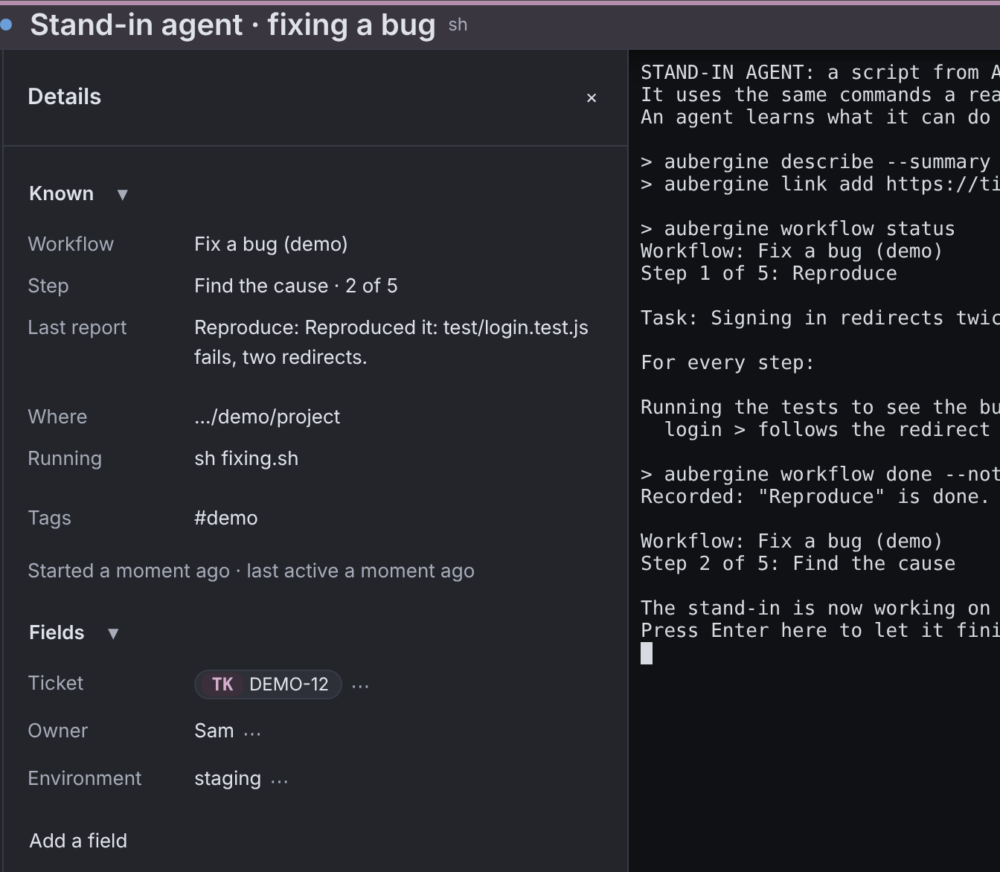

Aubergine에 포함된 데모의 실제 화면입니다. 캔버스 하나에 터미널 여섯 개, 그리고 나를 기다리는 하나.
Terminal management, rethought
이미 쓰고 있는 터미널에 그동안 없던 것을 더합니다. 나란히 놓일 자리, 기억, 그리고 여러분이 필요할 때 알려 주는 방법입니다.
생산성 향상
여러 에이전트가 각자의 터미널에서 동시에 일합니다. 기다리는 에이전트에만 답하고 나머지는 계속 실행되게 두세요.
더 나은 개발자 경험
모든 터미널에는 이름, 색, 노트, 캔버스 위의 자리가 있습니다. 브라우저를 닫거나 Aubergine을 다시 시작해도 그대로 남아 있습니다.
갈아탈 필요 없음
셸, 도구, 에이전트, 모델 모두 지금 그대로입니다. Aubergine은 그 주위에 캔버스를 더할 뿐, 자체 모델이 없습니다.
실제 모습
Aubergine에 포함된 데모의 실제 화면입니다. 진짜 에이전트가 아닌 대역 에이전트입니다.
모든 터미널을 하나의 캔버스에
원하는 만큼 나란히 놓을 수 있고, 화면에 보이는 동안 각각 실시간으로 동작합니다.

기다리는 터미널이 눈에 띕니다
에이전트가 여러분을 필요로 하면 캔버스 반대편에서도 알아볼 수 있고, W 키로 바로 그곳에 갈 수 있습니다.

터미널 하나만 따로
어떤 터미널이든 별도의 브라우저 탭에서 열 수 있습니다. 사본이 아니라 같은 터미널입니다.


에이전트는 직접 가져오세요
Aubergine은 평범한 터미널을 실행합니다. 모델을 호출하지 않고, 키를 보관하지 않으며, 계정도 없습니다. 이미 쓰고 있는 명령줄 에이전트가 여러분의 계정으로 로그인한 채, 여러분이 고른 모델로 그 터미널에서 실행됩니다. Aubergine이 에이전트를 위해 스스로 해 주는 일은 현재 Claude Code에 맞춰 만들어져 있습니다. 다른 에이전트도 aubergine 명령으로 같은 내용을 알릴 수 있습니다.
Claude Code
New terminal 메뉴에서 시작하면 작업 중인지, 여러분을 기다리는지, 끝났는지를 스스로 알립니다. Aubergine은 대화를 이어서 재개하고, 설정 상태를 보여 줄 수 있습니다.
Codex와 ChatGPT
Codex는 여느 프로그램처럼 터미널에서 실행되며, 지침에서 그렇게 하라고 알려 주면
aubergine명령으로 상태를 보고합니다. 브라우저의 ChatGPT는 터미널 프로그램이 아닙니다.그 밖의 명령줄 에이전트 또는 일반 셸
모든 터미널에는
aubergine명령이 있고,aubergine guide --snippet은 에이전트 자체 지침에 넣을 다섯 줄을 출력합니다.
그 밖에 만들어진 것
이 모든 것이 지금 여러분의 컴퓨터에서 동작합니다.
터미널 캔버스
실제 터미널을 이동하고 확대·축소하며 배치하고, 한 번 클릭해 입력하고, 잠시 치워 두었다가 나중에 다시 불러오거나, 세부 정보와 노트를 옆에 둔 채 브라우저 탭에서 따로 열 수 있습니다.
누가 기다리는지 보기
모든 터미널에 작업 중, 유휴, 대기(waiting for you) 상태가 표시되고, “For you” 목록과 “next waiting”이 사람이 필요한 곳으로 바로 데려갑니다.
대기열과 일정
작업을 한 번 적어 두면 한가한 에이전트가 가져가게 하거나, 원하는 요일의 정해진 시각에 실행되도록 예약할 수 있습니다.
작업 사본
각 에이전트에게 저장소의 사본을 자기 브랜치로 따로 주어, 두 에이전트가 같은 파일을 편집하는 일이 없게 합니다.
프로젝트
서버 하나에 관제실 여러 개. 프로젝트마다 자체 캔버스, 대기열, 일정, 규칙이 있고, 파일이나 템플릿으로 저장할 수 있습니다.
워크플로와 승인
에이전트에게 따라야 할 단계를 주고, 사람을 기다리는 단계에서 멈추게 하고, 진행 중인 모든 실행을 하나의 보드에서 지켜봅니다.
터미널 간 메시지
보낸 쪽 이름, 한도, 일시 정지를 갖춘 채 에이전트끼리 대화하게 합니다. 캔버스마다 기본값은 닫혀 있습니다.
API와 MCP 서버
범위가 지정된 토큰을 쓰는 로컬 HTTP API, 타입이 있는 클라이언트, 그리고 자격 증명이 쓸 수 있는 도구만 나열하는 MCP 서버.
명령줄
aubergine명령은 컴퓨터의 어느 터미널에서든 터미널을 시작하고, 작업을 대기열에 넣고, 일정을 정하고, 보드를 읽고, 실행을 승인합니다.요약과 기록
자리를 비운 동안 무엇이 바뀌었는지 보고, 터미널 출력을 검색하고, 팔레트에서 지난 대화를 다시 엽니다.
터미널은 여러분의 것으로 남습니다
로컬 전용
서버는 127.0.0.1에서만 수신하며 모든 요청의 Host와 Origin을 확인합니다. 다른 기기에서의 사용은 여러분이 직접 설정하기 전까지 꺼져 있습니다.
앱보다 오래 사는 터미널
모든 터미널은 tmux 세션입니다. 브라우저를 닫거나 Aubergine을 다시 시작해도 작업은 계속 실행됩니다.
모델도, 키도 없음
Aubergine은 모델을 고르거나 호출하지 않으며, 모델용 키도 보관하지 않습니다. 에이전트가 각자 가져옵니다.
결정은 여러분이
토큰에는 범위가 있고, 에이전트가 작성한 것은 여러분의 검토를 기다리며, 승인은 사람이 합니다.
질문
Aubergine은 무엇인가요?
터미널 세션을 올려 두는, 브라우저 기반의 로컬 캔버스입니다. 각 터미널은 배치하고 사용할 수 있는 노드이므로, 여러 코딩 에이전트를 한꺼번에 실행하면서 어느 것이 여러분을 기다리는지 볼 수 있습니다.
Aubergine이 제 터미널이나 코드를 어딘가로 보내나요?
아니요. 모든 것이 여러분의 컴퓨터에서 실행됩니다. 서버는 127.0.0.1에서만 수신하며 모든 요청의 Host와 Origin을 확인합니다.
Aubergine을 실행하려면 무엇이 필요한가요?
tmux 3.2 이상과 Node.js 22 이상이 설치된 macOS입니다. 설치 프로그램에는 pnpm도 필요합니다. Linux에서는 컨테이너 안에서만 실행해 봤습니다. Windows에서는 WSL 2 안에서만 실행되며, 이것도 아직 시도해 보지 않았습니다. Windows 가이드를 보세요.
터미널에서 Claude Code를 직접 시작하면 어떻게 되나요?
여느 프로그램처럼 동작하며, 평소대로 입력하면 됩니다. 다만 Aubergine은 자신이 직접 시작한 에이전트만(New terminal에서 Claude Code) 에이전트로 인식합니다. 에이전트가 하는 일을 보고하는 작은 훅 몇 개를 추가하기 때문입니다. 직접 시작하면 터미널은 claude를 실행 중인 busy 상태로만 보입니다. 무언가를 물어도 waiting for you로 표시되지 않고, 그곳에서 워크플로를 시작해도 아무것도 입력되지 않습니다. 안에서도 여전히 동작하는 aubergine workflow status를 실행하라고 직접 알려 주거나, 대신 New terminal 메뉴에서 에이전트를 시작하세요.
Aubergine은 무료인가요?
네. MIT 라이선스로 공개된 무료 오픈 소스이며, 소스는 GitHub에 있습니다.
계획 중인 것
멀티플레이어, 클라우드 에이전트, 승인 모드 등은 계획 중이며 아직 만들어지지 않았습니다. 로드맵 보기.
5분이면 시작합니다
tmux 3.2 이상과 Node.js 22 이상이 설치된 macOS가 필요합니다. brew install tmux node로 둘 다 설치할 수 있습니다.
설치
npm install -g @meatgarden/aubergine또는 소스에서 pnpm으로 빌드하는 설치 프로그램을 사용하세요.
시작하고 브라우저 열기
aubergine start --open서버를 시작하고, 로그인된 상태로 브라우저를 엽니다.
둘러보기
빈 캔버스에서 Show me around(둘러보기)를 클릭하세요. 대역 에이전트가 있는 Demo 캔버스를 만들고 여덟 개의 짧은 단계로 안내합니다.
aubergine demo --remove로 없앨 수 있습니다.
설치 프로그램은 ~/.aubergine과 aubergine이라는 링크 하나만 변경합니다. sudo를 쓰지 않으며, 셸 시작 파일을 편집하지 않습니다.